How to use this lesson
§0 · From last time. Lesson 3.2 used constrained decoding for tool calls. The same machinery can constrain any structured output. CLAUDE.md rule #1 (validate all LLM output with Zod before use) is enforceable at generation time, not just validation time.
Business Scenario
Acme Support.
Lin Chen's ticket-classifier emits this once a week:
{
"category": "refund_request",
"urgency": "high",
"needs_human": true,
"estimated_refund_amount": "around $50-75 maybe"
}
The downstream system expects estimated_refund_amount to be a number, not a string. The pipeline crashes. The ticket gets stuck. CSAT drops.
"Why didn't the schema catch this?" Lin asks.
Because the schema was applied after generation, by Zod, in code. By then it's too late; the model has already burned tokens producing invalid output. Constrained decoding applies the schema during generation.
Bridge to Topic
There are three places to enforce structure: at generation (constrained decoding), at parse (Zod), at use (defensive programming). All three are needed; but the most expensive failures are caught only at generation.
Mind Map

Mermaid source
mindmap
root((Structured Output))
JSON Schema
Types
Required fields
Enums
Pattern
Constrained Decoding
FSM over grammar
Per-token restriction
Zero parse errors
Validation Stack
Generation strict
Parse Zod
Use defensive
Failure Modes
Wrong type
Missing field
Out of range
Hallucinated enum
Elaboration
4.1 The three-layer validation stack
| Layer | When | What it catches |
|---|---|---|
| Generation (strict) | During LLM decoding | Wrong type, missing required, invalid enum |
| Parse (Zod) | After API returns | Schema drift between model and code |
| Use (defensive) | At application boundaries | Business-rule violations (e.g., refund > $50) |
Each layer is necessary. Strict decoding is the cheapest and the only one that prevents wasted tokens. Zod and defensive coding handle drift between deployments and business rules the schema can't express.
4.2 JSON Schema features that matter
{
"type": "object",
"properties": {
"category": {
"type": "string",
"enum": ["refund", "shipping", "sizing", "other"]
},
"urgency": {
"type": "string",
"enum": ["low", "medium", "high"]
},
"estimated_refund_amount": {
"type": "number",
"minimum": 0,
"maximum": 10000
}
},
"required": ["category", "urgency"]
}
Three features:
enum— restricts to a known set; eliminates Lin's "around $50-75 maybe" problem becauseestimated_refund_amountis forced to a number.minimum/maximum— bounds business-meaningful values.required— ensures critical fields aren't dropped.
4.3 What strict decoding actually does
Internally: parse the schema to a finite-state machine (FSM). At each decoding step, only tokens that keep the FSM in a valid state are sampled. For our schema:
- At position right after
"estimated_refund_amount":, the legal tokens are digits and.(number tokens). The model cannot emit"around". - After
"category": ", the legal tokens are prefixes ofrefund,shipping,sizing,other. The model cannot emit"refund_request".
4.4 When the schema fights the model
If you give the model a task it cannot meaningfully complete, strict decoding will force it to emit something — possibly wrong but syntactically valid. Example: ask for estimated_refund_amount on a ticket that's about sizing (not a refund). The model is forced to emit a number even though the right answer is "N/A."
Fix: make refused/null fields explicit:
"estimated_refund_amount": {
"oneOf": [
{"type": "number", "minimum": 0, "maximum": 10000},
{"type": "null"}
]
}
Then the model can emit null legally when the field doesn't apply.
Problem Statement
Lin's failing schema is:
const TicketAnalysis = z.object({
category: z.string(),
urgency: z.string(),
needs_human: z.boolean(),
estimated_refund_amount: z.number().optional(),
});
- Identify three drift risks.
- Rewrite as strict JSON schema for the model + Zod for parse-time double-check.
- Where in the stack do the
needs_humanbusiness rules belong?
Solution Walkthrough
Three drift risks:
categoryisz.string()— model can emit anything.urgencysimilarly — no enum constraint.estimated_refund_amountis optional butz.number()won't accept the string the model emits.
Strict schema:
const CATEGORIES = ["refund", "shipping", "sizing", "other"] as const;
const URGENCIES = ["low", "medium", "high"] as const;
const strictSchema = {
type: "object",
properties: {
category: { type: "string", enum: CATEGORIES },
urgency: { type: "string", enum: URGENCIES },
needs_human: { type: "boolean" },
estimated_refund_amount: { oneOf: [{ type: "number", minimum: 0 }, { type: "null" }] },
},
required: ["category", "urgency", "needs_human"],
};
const TicketAnalysis = z.object({
category: z.enum(CATEGORIES),
urgency: z.enum(URGENCIES),
needs_human: z.boolean(),
estimated_refund_amount: z.number().min(0).nullable(),
});
Where business rules live:
needs_human should be true when:
estimated_refund_amount > 50(Acme policy)category === "other"(untrusted bucket)urgency === "high"
Belongs at the use layer, not the schema layer:
function shouldEscalate(t: TicketAnalysis): boolean {
return (
(t.estimated_refund_amount ?? 0) > 50 ||
t.category === "other" ||
t.urgency === "high" ||
t.needs_human // model can also flag it
);
}
The schema enforces shape; business code enforces policy. Don't mix.
Mathematical Foundation
7.1 Grammar-restricted sampling preserves quality
Surprisingly, constrained decoding usually does not hurt model quality on structured tasks. Intuition: the model has implicit beliefs about what structured output should look like; the constraint typically aligns with those beliefs. The constraint only "hurts" when the model wanted to give an unstructured answer.
7.2 Information content of the schema
A schema with N possible values for a field reduces the field's entropy by:
$$ \Delta H = \log_2(V) - \log_2(N) $$
where $V$ is the model's effective vocabulary at that position. For an enum with 4 options vs free-form string: roughly 13 bits of entropy reduction per such field — pure constraint with no information cost.
Technical Deep-Dive
8.1 Schema design rules
- Use enums wherever the value space is closed.
- Use minimum/maximum wherever business has bounds.
- Use null explicitly instead of
optionalto express "not applicable." - Use
additionalProperties: falseto prevent the model from inventing fields. - Use
oneOf/anyOffor tagged unions when the output shape depends on a discriminator.
8.2 Schema versioning
When you change a schema in production:
- Bump a version number on the schema.
- Log the version with every emission.
- Keep parsers for the last N versions.
Schema drift between code and prompts is one of the most common production-bug families. Versioning makes it tractable.
8.3 Schema as documentation
A well-designed schema is self-documenting. Use the description field on every property to tell the model (and humans reading the code) what the field means. The descriptions become part of the prompt the model sees.
What This Unlocks
- Lesson 3.4 uses schema design as part of the prompt-engineering toolkit.
- Module 4 designs Sherpa's tool-call schemas using these rules.
- Module 8 uses schema-validation pass rate as an eval metric.